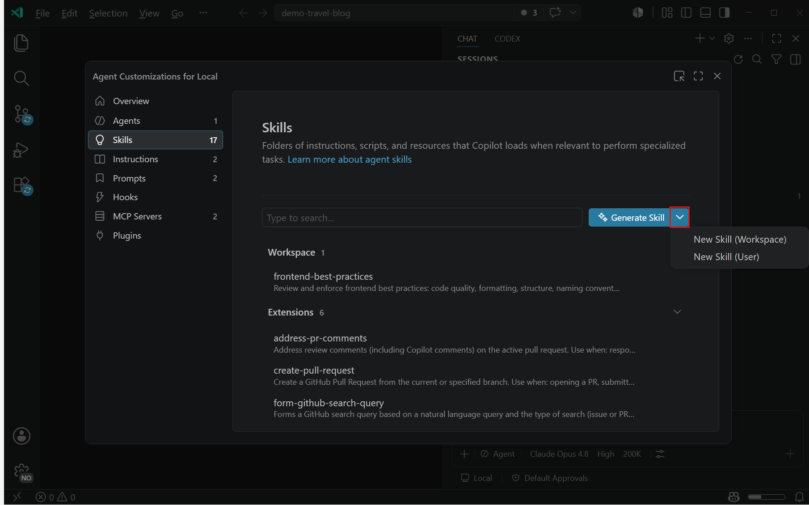

在 VS Code 中使用代理技能
代理技能是由指令、脚本和资源组成的文件夹，GitHub Copilot 可以在执行特定任务时加载这些内容。代理技能是一个开放标准，可在多个 AI 代理中使用，包括 VS Code 中的 GitHub Copilot、GitHub Copilot CLI 和 GitHub Copilot 云代理。
与主要定义编码指南的自定义指令不同，技能启用的是专业能力和工作流，可包含脚本、示例和其他资源。您创建的技能具有可移植性，可在任何兼容技能标准的代理中使用。
代理技能的主要优势：
- 专业化 Copilot：为特定领域的任务定制能力，无需重复上下文
- 减少重复：创建一次，即可在所有对话中自动使用
- 组合能力：组合多个技能以构建复杂的工作流
- 高效加载：仅在需要时将相关内容加载到上下文中
[!TIP]
使用代理自定义编辑器（预览版）在一个地方发现、创建和管理所有代理自定义设置。从命令面板运行 聊天：打开自定义设置。
代理技能与自定义指令的比较
虽然代理技能和自定义指令都有助于自定义 Copilot 的行为，但它们的用途不同：
| 功能 | 代理技能 | 自定义指令 | ||
|---|---|---|---|---|
| ------- | ------------ | ------------------- | ||
| 用途 | 教授专业能力和工作流 | 定义编码标准和指南 | ||
| 可移植性 | 可在 VS Code、Copilot CLI 和 Copilot 云代理中使用 | 仅限 VS Code 和 GitHub.com | ||
| 内容 | 指令、脚本、示例和资源 | 仅限指令 | ||
| 作用范围 | 特定任务，按需加载 | 始终应用（或通过 glob 模式） | ||
| 标准 | 开放标准（agentskills.io） | VS Code 专属 |
在以下情况下使用代理技能：
- 创建可在不同 AI 工具中使用的可复用能力
- 在指令旁边包含脚本、示例或其他资源
- 与更广泛的 AI 社区共享能力
- 定义专业工作流，如测试、调试或部署流程
在以下情况下使用自定义指令：
- 定义特定于项目的编码标准
- 设置语言或框架约定
- 指定代码审查或提交消息指南
- 使用 glob 模式根据文件类型应用规则
创建技能
[!TIP]
在聊天输入框中输入
/skills可快速打开 配置技能 菜单。
技能存储在包含 SKILL.md 文件的目录中，该文件定义了技能的行为。VS Code 支持两种类型的技能：
| 技能类型 | 位置 | ||
|---|---|---|---|
| ---------- | -------- | ||
| 项目技能，存储在您的仓库中 | .github/skills/、.claude/skills/、.agents/skills/ | ||
| 个人技能，存储在您的用户配置文件中 | ~/.copilot/skills/、~/.claude/skills/、~/.agents/skills/ |
您可以使用 setting(chat.agentSkillsLocations) 设置为项目技能配置额外的文件位置。如果您希望以不同的文件夹结构组织技能或有多个技能目录，这会很有用。
[!TIP]
在 monorepo 中，启用 setting(chat.useCustomizationsInParentRepositories) 可从父仓库根目录发现技能。了解有关父仓库发现的更多信息。
创建技能的步骤：
- 在聊天视图中，选择 配置聊天（齿轮图标）以打开代理自定义编辑器，然后选择 技能 选项卡。
- 从下拉菜单中选择 新建技能（工作区） 或 新建技能（用户），具体取决于您要将技能存储在何处。

- 选择位置并为技能输入名称。
- 通过填写 YAML 前置元数据并在文件正文中添加指令来完成
SKILL.md文件。--- name: skill-name description: 描述技能的功能以及何时使用它 --- # 技能指令 在此处添加您的详细指令、指南和示例... - （可选）向技能目录添加脚本、示例或其他资源。
例如，用于测试 Web 应用程序的技能可能包括：
SKILL.md- 运行测试的指令test-template.js- 测试模板文件examples/- 示例测试场景[!NOTE]
请确保在
SKILL.md中引用任何其他文件，以便代理能够获取它们。使用带有相对路径的 Markdown 链接语法，例如测试模板。使用 AI 生成技能
您可以使用 AI 根据能力描述生成技能。在聊天中输入 /create-skill 并描述您想要的技能（例如，"用于运行和调试集成测试的技能"）。代理会提出澄清性问题，并生成一个包含目录结构、指令和前置元数据的 SKILL.md 文件。
您也可以从正在进行的对话中提取可复用技能。例如，在您调试了一个复杂问题的多轮会话之后，可以请求"根据我们刚才调试的过程创建一个技能"，将多步骤流程捕获为可复用的技能。
您也可以从代理自定义编辑器中，通过在下拉菜单中选择 生成技能 来生成技能。
SKILL.md 文件格式
SKILL.md 文件是一个带有 YAML 前置元数据的 Markdown 文件，用于定义技能的元数据和行为。
头部（必需）
头部以 YAML 前置元数据格式编写，包含以下字段：
| 字段 | 必需 | 描述 | ||
|---|---|---|---|---|
| ------- | ---------- | ------------- | ||
name | 是 | 技能的唯一标识符。仅允许使用小写字母、数字和连字符（例如 webapp-testing）。请勿使用斜杠、冒号、点号或命名空间前缀。必须与父目录名称匹配。最多 64 个字符。包含无效字符的名称会导致技能静默加载失败。 | ||
description | 是 | 描述技能的功能以及何时使用它。请具体说明能力和用例，以帮助 Copilot 决定何时加载此技能。最多 1024 个字符。 | ||
argument-hint | 否 | 当技能作为斜杠命令调用时，显示在聊天输入字段中的提示文本。帮助用户了解需要提供哪些额外信息（例如 [test file] [options]）。 | ||
user-invocable | 否 | 控制技能是否在聊天菜单中显示为斜杠命令。默认为 true。设置为 false 可在 / 菜单中隐藏该技能，同时仍允许代理自动加载它。 | ||
disable-model-invocation | 否 | 控制代理是否可以根据相关性自动加载该技能。默认为 false。设置为 true 则仅允许通过 / 斜杠命令手动调用。 | ||
context | 否 | （实验性）控制技能的加载方式。默认为 inline（技能的指令被添加到父代理的上下文中）。设置为 fork 则在专用的子代理上下文中运行该技能。请参阅在分叉上下文中运行技能。 |
[!IMPORTANT]
当技能通过插件分发时，插件名称会自动用作命令前缀（例如/my-plugin:test-runner）。请勿手动向技能的name字段添加命名空间前缀。使用myorg/skillname或myorg:skillname等前缀会导致技能静默加载失败。
正文
技能正文包含 Copilot 在使用此技能时应遵循的指令、指南和示例。请编写清晰、具体的指令，描述：
- 该技能有助于完成什么
- 何时使用该技能
- 要遵循的分步流程
- 预期输入和输出的示例
- 对所包含脚本或资源的引用
您可以使用相对路径引用技能目录中的文件。例如，要引用技能目录中的脚本，请使用 测试脚本。
在分叉上下文中运行技能（实验性）
默认情况下，当 VS Code 加载技能时，技能的指令会被添加到父代理的上下文窗口中。对于大型技能或其推理过程的中间细节与对话其余部分无关的技能，您可以改为在分叉上下文中运行该技能。在分叉上下文中，技能在专用的子代理中执行，只有其最终结果会返回给父代理。这样可以保持主对话的上下文干净。
要在分叉上下文中运行技能，请将 SKILL.md 前置元数据中的 context 字段设置为 fork：
---
name: review-pr
description: 审查拉取请求的代码质量、风格和正确性。在需要审查 PR 时使用。
context: fork
---
# PR 审查
按照以下步骤审查拉取请求...在以下情况下使用 context: fork：
- 读取大量文件或运行冗长调查，其细节无需保留在主对话中
- 产生一个聚焦的结果（如摘要、报告或少量编辑），父代理可以直接据此操作
- 不应在最终输出之外影响父代理的行为
[!NOTE]
在分叉上下文中运行技能是一项实验性功能。在 VS Code 中启用
setting(github.copilot.chat.skillTool.enabled)设置以使用此功能。技能示例
以下示例演示了您可以创建的不同类型的技能。
---
name: webapp-testing
description: 使用 Playwright 测试 Web 应用程序的指南。在需要创建或运行基于浏览器的测试时使用。
---
# 使用 Playwright 进行 Web 应用程序测试
此技能帮助您使用 Playwright 为 Web 应用程序创建和运行基于浏览器的测试。
## 何时使用此技能
在以下情况下使用此技能：
- 为 Web 应用程序创建新的 Playwright 测试
- 调试失败的浏览器测试
- 为新项目设置测试基础设施
## 创建测试
1. 查看[测试模板](./test-template.js)了解标准测试结构
2. 确定要测试的用户流程
3. 在 `tests/` 目录中创建新的测试文件
4. 使用 Playwright 的定位器查找元素（优先使用基于角色的选择器）
5. 添加断言以验证预期行为
## 运行测试
本地运行测试：npx playwright test
调试测试：npx playwright test --debug
## 最佳实践
- 对动态内容使用 data-testid 属性
- 保持测试独立性和原子性
- 对复杂页面使用页面对象模型
- 在失败时截取屏幕截图---
name: github-actions-debugging
description: 调试失败的 GitHub Actions 工作流的指南。在需要调试失败的 GitHub Actions 工作流时使用。
---
# GitHub Actions 调试
此技能帮助您调试拉取请求中失败的 GitHub Actions 工作流。
## 流程
1. 使用 `list_workflow_runs` 工具查找拉取请求最近的工作流运行及其状态
2. 使用 `summarize_job_log_failures` 工具获取失败作业日志的 AI 摘要
3. 如果需要更多信息，请使用 `get_job_logs` 或 `get_workflow_run_logs` 工具获取完整的失败日志
4. 尝试在您的环境中本地重现失败
5. 修复失败的构建并在提交更改前验证修复
## 常见问题
- **缺少环境变量**：检查是否已配置所有必需的密钥
- **版本不匹配**：验证操作版本和依赖项是否兼容
- **权限问题**：确保工作流具有必要的权限
- **超时问题**：考虑拆分长时间运行的作业或增加超时值将技能用作斜杠命令
技能可在聊天中作为斜杠命令使用，与提示文件并列。在聊天输入字段中输入 / 即可查看可用技能和提示的列表，然后选择一个技能来调用它。
您可以在斜杠命令后添加额外的上下文。例如，/webapp-testing for the login page 或 /github-actions-debugging PR #42。
默认情况下，所有技能都会出现在 / 菜单中。使用 user-invocable 和 disable-model-invocation 前置元数据属性来控制每个技能的访问方式：
| 配置 | 斜杠命令 | 由 Copilot 自动加载 | 用例 | ||
|---|---|---|---|---|---|
| --- | --- | --- | --- | ||
| 默认（两个属性均省略） | 是 | 是 | 通用技能 | ||
user-invocable: false | 否 | 是 | 模型在相关时加载的背景知识技能 | ||
disable-model-invocation: true | 是 | 否 | 仅希望按需运行的技能 | ||
| 两者均设置 | 否 | 否 | 已禁用的技能 |
Copilot 如何使用技能
技能以渐进方式加载内容，以保持上下文高效。以下是 Copilot 如何使用 webapp-testing 技能的示例：
- 发现：Copilot 从 YAML 前置元数据中读取技能的
name和description。当您要求"帮我测试登录页面"时，Copilot 根据webapp-testing技能的描述将其匹配。 - 指令加载：Copilot 将
SKILL.md正文加载到其上下文中，使其能够访问详细的测试流程和指南。您也可以通过直接在聊天中输入/webapp-testing来触发此步骤。 - 资源访问：当 Copilot 按照指令操作时，它仅在引用技能目录中的其他文件（如
test-template.js或示例场景）时才访问它们。如果某个文件未在指令中被引用，则不会被加载。
这种三级加载系统意味着您可以安装许多技能而不会消耗上下文。Copilot 仅为每个任务加载相关内容。
选择使用分叉上下文的技能遵循相同的发现步骤，但其指令和读取的任何文件都将加载到单独的子代理中。只有技能的最终结果才会返回给父代理。
使用共享技能
您可以使用他人创建的技能来增强 Copilot 的能力。github/awesome-copilot 仓库包含不断增长的社区技能、自定义代理、指令和提示集合。anthropics/skills 仓库包含额外的参考技能。
您还可以发现并安装捆绑在代理插件中的技能。来自已安装插件的技能会与您本地定义的技能一起出现在 配置技能 菜单中。
使用共享技能的步骤：
- 浏览仓库中可用的技能
- 将技能目录复制到您的
.github/skills/文件夹 - 根据您的需求审查并自定义
SKILL.md文件 - （可选）根据需要修改或添加资源
[!TIP]
在使用共享技能之前，请务必审查确保它们符合您的要求和安全标准。VS Code 的终端工具为脚本执行提供了控制，包括带有可配置允许列表的自动批准选项以及对运行代码的严格控制。了解有关自动批准功能的安全注意事项的更多信息。
从扩展贡献技能
扩展可以使用其 package.json 中的 chatSkills 贡献点来贡献技能。路径必须指向包含 SKILL.md 文件的目录，并遵循代理技能规范。
必需的文件夹结构
技能目录必须遵循以下结构：
extension-root/
└── skills/
└── my-skill/ # 目录名称必须与 SKILL.md 中的 `name` 字段匹配
└── SKILL.md # 必需在 package.json 中注册技能
在扩展的 package.json 中添加 chatSkills 贡献点。path 属性必须指向相应的 SKILL.md 文件：
{
"contributes": {
"chatSkills": [
{
"path": "./skills/my-skill/SKILL.md"
}
]
}
}[!IMPORTANT]
SKILL.md前置元数据中的name字段必须与父目录名称匹配。例如，如果目录是skills/my-skill/，则name字段必须为my-skill。如果名称不匹配，该技能将不会被加载。
SKILL.md 文件遵循与项目和个人技能相同的格式。例如：
---
name: my-skill
description: 描述技能的功能以及何时使用它。
---
# 我的技能
技能的详细指令...代理技能标准
代理技能是一个开放标准，可在不同的 AI 代理之间实现可移植性。您在 VS Code 中创建的技能可与多个代理一起使用，包括：
- VS Code 中的 GitHub Copilot：可在聊天和代理模式下使用
- GitHub Copilot CLI：在终端中工作时可访问
- GitHub Copilot 云代理：在自动化编码任务期间使用
在 agentskills.io 了解更多关于代理技能标准的信息。